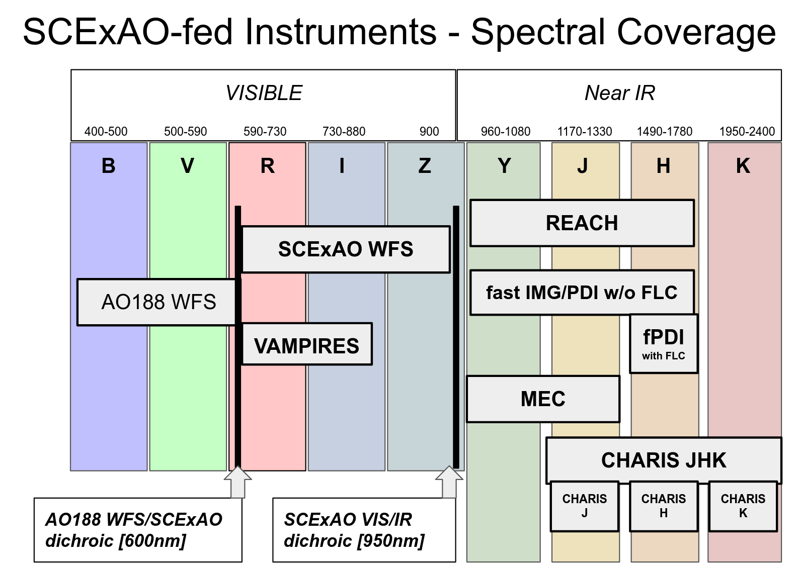
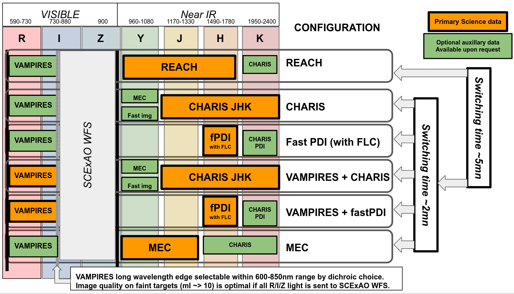

Proposers should ensure that the instrument selection for their proposal includes the primary science data to be collected. All observations including REACH data should select REACH as the primary instrument. Optional auxiliary data to be collected should be described in the proposal under the instrument configuration section.
If multiple modes are used during the night, please describe switching schedule and consult with the instrument team to ensure the proposed observation plan is viable: use of multiple instruments/modes increases the time required for instrument calibrations, may require additional support staff, increases science data storage requirements, and may require additional pre-observation instrument checks and alignments.
Requests to acquire optional auxiliary data or switching between modes that are not described in the proposal will be handled on a best-effort basis and require prior approval from the Subaru Telescope Telescope Allocation Committee. Requests should be sent to the Science Operations division chief or Director with a description about the necessity of the additional instruments and why it was omitted in the original proposal.
SCExAO feeds instruments and modules spanning the visible to near-IR wavelength range.
Multiple instruments and modules can be operated simultaneously. The chart below outlines the main modes of operation for the instrument. Modules/instruments on the same horizontal line can be operated simultaneously.
{kind=link}
{kind=link}